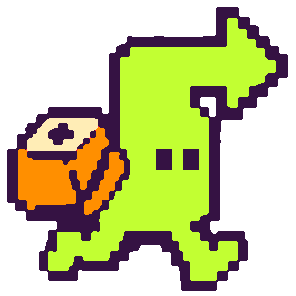

预览
在设备外框中预览键盘
内置 iPhone 17 Pro / Pro Max、Xiaomi 17、Pixel 10 Pro、Galaxy S25 Ultra 的厂商分辨率模板，按各自屏幕与安全区渲染。浅色 / 深色、竖屏 / 横屏、普通 / 按下 / 滑动 / 长按状态都能直接看到。
- 九键、魔改九键、26 键布局自动识别
- 交互预览中按键可进入模拟输入区，切换符号、数字、ABC 面板
- 桌面端滚轮缩放、拖动平移；触屏双指缩放
自由开源，为每一份灵感而生
你的键盘，当然由你定义。
用键设可视化编辑百度、搜狗、手心输入法皮肤。
从一个按键到一整套风格，把灵感变成日常。
打开浏览器就能开始，手机也能从内置模板新建。

01 / PLAYGROUND
不用脑补效果，也不用反复安装。十一段操作演示：把动画拖到按键、定制常驻工具栏、挑选界面主题，也能看到桌面端如何通过 ADB 推送皮肤、手机上如何编辑。
真实录屏 · 实时预览与设备外框
预览
内置 iPhone 17 Pro / Pro Max、Xiaomi 17、Pixel 10 Pro、Galaxy S25 Ultra 的厂商分辨率模板，按各自屏幕与安全区渲染。浅色 / 深色、竖屏 / 横屏、普通 / 按下 / 滑动 / 长按状态都能直接看到。
编辑
检查器把配置翻译成中文标签：位置、尺寸、内边距、背景 / 前景样式、字体颜色、点击与上下左右滑动作、长按、动画与音效。每次修改立即生效并进入撤销栈。
源码
右侧“源代码”会定位并整行高亮当前按键的配置段。INI 与 JSON 都有语法高亮、查找替换、补全和当前行释义；在源码里改一个值，画布同步刷新。
资源
在资源工作区按类型、名称和明暗外观筛选，快速找到样式、图片、字体和音效。双击图片能查看图集切片，重命名图片时会同步更新引用。
动效
从左侧「动画」打开独立工作区。左边按动效、粒子筛选，中间用时间轴、循环和 ¼× 慢放看效果，右边编辑参数；组合动画的子动画各有一条轨道。
转换
在同一窗口选择格式、查看兼容性差异并另存。录屏以「小米统一圆角」内置模板为例，从百度旧版 .bds 导出新版 Android .bda。百度、搜狗与手心支持常用转换方向，搜狗与手心不直接互转。
转新版 BDA 会使用官方面板布局，自定义按键位置、布局与手势可能无法保留。导出后的效果请以目标输入法真机安装为准。
02 / NO BOUNDARIES
同格式编辑会尽量保留未修改的文件、未知字段、ZIP 条目顺序与原始压缩数据。跨格式导出属于转换，可能降级的内容会在导出前列出并等你确认。
iOS / Android 经典皮肤原地编辑写回；BDA 按官方 protobuf 描述符解析，按 appearanceConfig 识别 iOS / Android 家族，写回时保留未知字段。
支持普通 ZIP 与官方加密容器，自动识别分辨率目录与白天 / 夜间外观，按搜狗语义编辑背景、候选栏、按键样式、动画配置与音效。
以 skin.json 为唯一数据源，覆盖拼音、英文、数字、符号、手写、表情等 60+ 种面板类型，可在源码面板直接编辑 JSON 片段。
03 / YOUR TOOLKIT
桌面版可配置自己的模型服务，用一句话描述风格或改动；支持“当前面板 / 整个皮肤”范围、多个设计方向，整轮修改一步撤销。
在「设置 → 外观」浏览主题缩略图，点击就能预览整套编辑器界面。录屏里同一款内置皮肤先后切换到玫瑰石英和深海蓝。
从「工具」把保存、导出、面板工具等常用动作拖到顶部，直接拖动排序。下次打开，常驻工具仍在原位。
内置百度官方 BDA / BDS、手心鸿蒙和社区 BDS 模板。
除你主动使用 AI 设计外，皮肤、配置和图片都只在本机处理，不会上传。
完整的撤销 / 重做、未保存保护，保存与导出都有明确的进行中、成功、失败反馈。
移动端
从手机首页新建或打开皮肤后，默认进入交互预览。试按合适了，点「开始编辑」，画布与属性面板同屏，拖动分隔线就能调整空间。
04 / LET’S MAKE SOMETHING
从桌面「文件」或手机「首页」打开已有文件，也可以选内置模板新建。
在「概览」选择布局，在「资源」和「动画」管理素材与动效。「源代码」可直接浏览皮肤包。
点击画布上的按键，在右侧检查器修改；随时切回“交互预览”试按。
在「分享与导出」中保存当前格式、另存为其他格式，或在支持的设备上使用系统分享。
05 / PRESS START
网页版无需安装。原生文件关联、最近文件、ADB 分享和 AI 设计等功能以各平台客户端为准。
macOS 包使用 ad-hoc 签名，首次打开若被拦截，请在 Finder 中右键应用选择“打开”。Windows 版依赖系统 WebView2 Runtime。
GOOD THINGS ARE MADE TOGETHER.
键设以 GNU AGPLv3 开源。遇到问题、想要新格式，或者做出了好看的皮肤，都欢迎来交流。
QQ 交流群：228040912